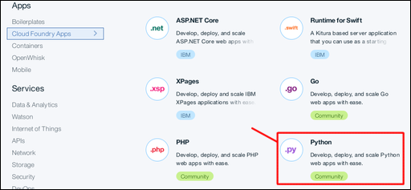
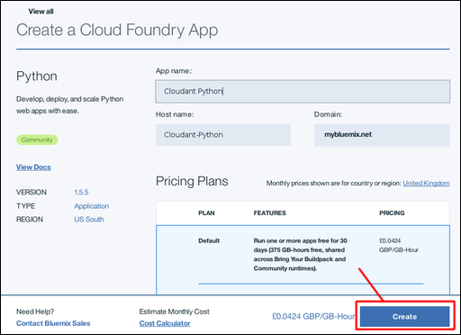
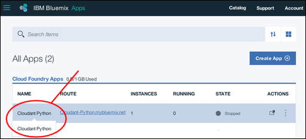
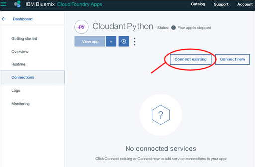
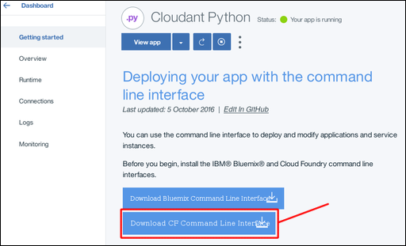
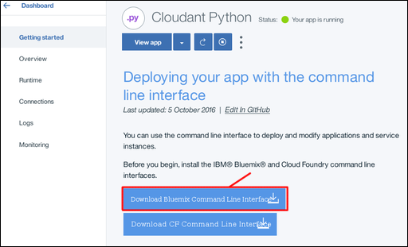
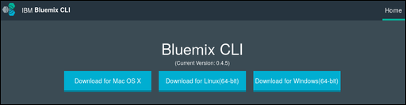

Creating a simple Bluemix application to access a Cloudant database: the application environment
This section of the tutorial describes how to set up the application environment you must have for creating an IBM® Bluemix® application.
Creating a Bluemix application environment
-
Log in to your Bluemix account. The Bluemix dashboard can be found at:
http://bluemix.net  . After you authenticate with your user name and password, the Bluemix dashboard appears:
. After you authenticate with your user name and password, the Bluemix dashboard appears:

-
Click the 'Catalog' link:

A list of the services available on Bluemix appears.
-
Click the 'Cloud Foundry Apps' entry under the Apps heading:

A list of the Cloud Foundry Applications available on Bluemix appears.
-
Click the 'Python' entry:

A 'Create a Cloud Foundry App' form appears.
-
Use the 'Create a Cloud Foundry App' form to specify and create the environment for your Python Cloud Foundry application. Enter a name for your application, for example 'Cloudant Python'. The host name
is generated for you automatically, although you can customize it:

Note: The host name must be unique within the Bluemix domain. In this example, the domain is 'mybluemix.net', giving a full host name of 'Cloudant-Python.mybluemix.net'.
-
Click 'Create' to create the application environment:

-
After a short pause, the 'Getting Started' window for your new application environment appears. A test application is automatically created within the environment. The application is started automatically, as shown by the green
icon and Your app is running status. The application is a 'heartbeat' program, sufficient to show that the new application environment is ready for you to use. Click the Dashboard' link to return to your Bluemix
account dashboard.

-
Your dashboard now includes the newly created application environment:

You now have a Bluemix Python application environment, ready to use.
To work with a Cloudant NoSQL DB database instance, the next step is to create a 'connection' between the application environment and the database instance.
Connecting Bluemix applications and services
This section of the tutorial explains how you connect Bluemix application environments and services by using the configuration and management area of your application.
-
From your Bluemix dashboard, click the entry for your application.

Note: Avoid the 'Route' column, as clicking the link that is associated with your application invokes the application rather than taking you to the configuration area. A better place to click is on the name
of your application.
The configuration and management overview area for your application appears.
-
To connect the application environment to another service, click the 'Connections' link:

An area appears for configuring a connection between your application and any other services available within your account.
-
A prerequisite for this tutorial is an existing Cloudant NoSQL DB database instance. Click 'Connect existing' to establish a connection between that database instance and
your application:

A list of the existing service instances in your account appears.
-
Click the Cloudant NoSQL DB database instance that you want to use. This tutorial uses the 'Cloudant Service 2017' instance:

-
You are asked to confirm that you really want to connect the database instance to your application. Click 'Connect' to confirm the connection:

-
Modifying the service connections for an application affects its overall configuration. The modification requires a 'restaging' of the application, which also forces a running application to stop. A window appears for you to confirm that
you are ready for the 'restaging' to proceed. Click 'Restage' to continue:

-
The service connections page reappears. It now includes the newly connected database instance:

The application environment and the database instance are now connected. The next step is to ensure that the necessary tools are installed for you to work with Bluemix applications.
This section of the tutorial describes the toolkits that must be installed to work with your Bluemix environment, applications, and services.
The Cloud Foundry toolkit is a collection of tools for working with applications that
are deployed in a Cloud Foundry-compatible environment. Use these tools for tasks such as updating a deployed application, or to start and stop a running application.
The Bluemix toolkit provides extra capabilities, which are required for working with applications hosted and running within a Bluemix environment.
Downloading and installing the toolkits is a one-off task. If the toolkits are already installed and working on your system, you do not need to download them again, unless they are updated.
General information about the toolkits is available
here .
Some operating system distributions have a version of the Cloud Foundry toolkit available already. If the version supported is 6.11 or better, it is compatible with Bluemix and can be used. You can check what version is installed by running this test.
Alternatively, use the following steps to download and install the Cloud Foundry toolkit on your system:
-
A link to download the Cloud Foundry toolkit is available on the 'Getting started' window of your application environment:

-
Clicking the link takes you to a
download page on GitHub :

-
Download and run the most recent version of the installer for your system.
-
To check that you have a working Cloud Foundry toolkit, run the following command at a prompt:
cf --version
Expect a result similar to the following output:
cf version 6.20.0+25b1961-2016-06-29
Note: The Cloud Foundry toolkit version must be 6.11 or more recent for compatibility with Bluemix.
Use the following steps to download and install the Bluemix toolkit on your system.
-
A link to download the Bluemix toolkit is available on the 'Getting started' window of your application:

-
Clicking the link takes you to a
download page :

-
Download and run the appropriate installer for your system.
The installer checks to ensure that you have a suitable version of the Cloud Foundry toolkit installed. If everything is correct, the Bluemix toolkit installs on your system.
-
To check that you have a working Bluemix toolkit, run the following command at a prompt:
bluemix --version
Expect a result similar to the following output:
bluemix version 0.4.5+03c29de-2016-12-08T07:01:01+00:00
The tools to work with Bluemix applications are now available. The next step is to obtain the 'starter' materials to help you create a Bluemix application.
The 'starter' application
This section of the tutorial describes a Bluemix starter application, and explains how you customize it to access a Cloudant NoSQL DB database instance.
A Bluemix starter application is the minimum possible collection of source and configuration files necessary to create a working Bluemix application. In some regards, it is similar to a 'Hello World' application ; sufficient only to show that the basic system and configuration is working correctly.
A Bluemix starter application is an archive of example files that you must modify or extend as you develop your Bluemix application.
Three files in particular are essential:
The 'Procfile' file
The 'Procfile' contains the details that Bluemix needs to run your application.
More specifically, a 'Procfile' is a Cloud Foundry artifact that defines an application process type, and the command to run the application. More information about 'Procfile' is available
here .
The 'Procfile' for a Bluemix Python starter application looks similar to the following example:
web: python server.py
This example indicates that the application is a Python web application, and that it is started by running the command:
python server.py
A starter 'server.py' Python source file is included in the starter application archive. The 'server.py' file is modified for your application. Alternatively, create an entirely new Python source file. Then,
update the 'Procfile' so that the new file is used when your application starts.
The 'manifest.yml' file
The 'manifest.yml' file is a full description of the application, and of the environment it requires to run.
The file for a Bluemix Python starter application looks similar to the following example:
applications:
- path: .
memory: 128M
instances: 1
domain: mybluemix.net
name: Cloudant Python
host: Cloudant-Python
disk_quota: 1024M
services:
- Cloudant Service 2017
Three points are worth noting:
- The '
domain', '
name', and 'host' values correspond to the values entered when your Bluemix application was created.
- The '
name' value is used by the Cloud Foundry toolkit to identify the application you are administering.
- The '
services' value confirms that the 'Cloudant Service 2017' Cloudant NoSQL DB database instance is connected to the application environment.
You do not normally need to modify the 'manifest.yml' file, however it is helpful to understand why it must be present for your application to work.
The 'requirements.txt' file
The 'requirements.txt' file specifies any additional components that are required for your application to work.
In the starter application, the 'requirements.txt' file is empty.
However, in this tutorial the Python application accesses a Cloudant NoSQL DB database instance. Therefore, the application must be able to use the
Cloudant NoSQL DB client library for Python applications.
To enable the Python client library, modify the 'requirements.txt' file to read:
cloudant==2.3.1
The next step
The next step in the tutorial is to create the application.